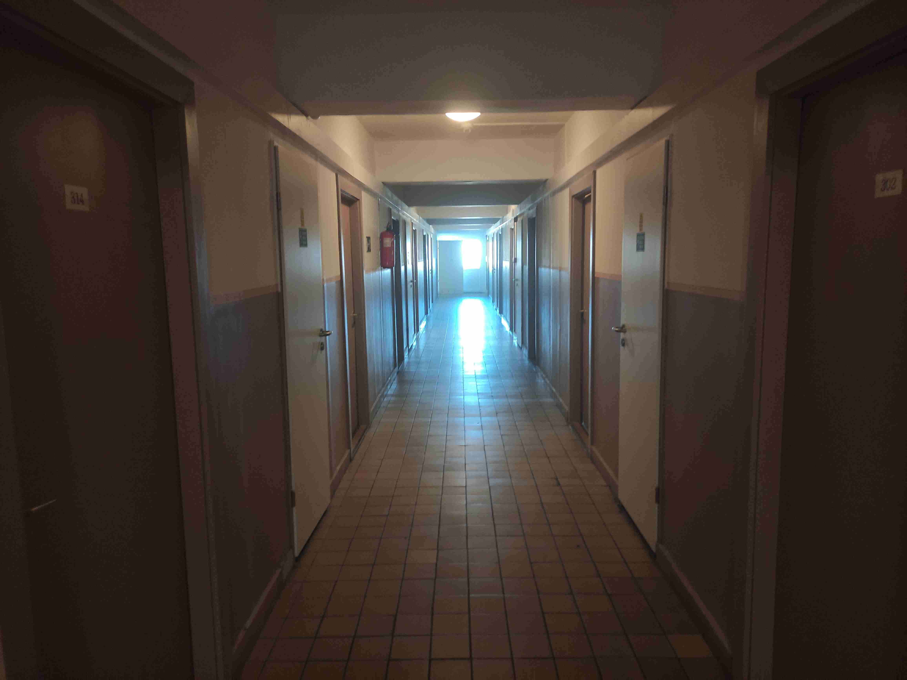

A kollégiumi közösség számos előnnyel jár, különösen a fiatalok számára, akik életük egy jelentős szakaszát
távol töltik otthonuktól. Az első és legfontosabb előnye a társas támogatás. Egy kollégiumban az emberek
közösséget alkotnak, és gyakran ugyanazokkal a problémákkal és kihívásokkal néznek szembe, mint például a
tanulás, a vizsgák stressze vagy az otthontól való távolság. Ez lehetőséget ad arra, hogy a diákok egymásnak
tanácsot adjanak, meghallgassák egymást, és közösen találjanak megoldásokat. A közös élmények
összekovácsolják az embereket, így a barátságok és támogató kapcsolatok könnyebben alakulnak ki.

Közlekedés
Második előnyként említhető a sokféleség és a kulturális gazdagodás. A kollégiumok gyakran különböző
hátterű, szokásokkal és kultúrával rendelkező diákokat fogadnak, ami lehetőséget teremt az új perspektívák
megismerésére. Ez nemcsak az emberek személyiségét gazdagítja, hanem segíti a tolerancia és a nyitottság
fejlődését is. A diákoknak lehetőségük van más szokások és életstílusok megismerésére, ami hosszú távon
hozzájárulhat ahhoz, hogy jobban megértsék és elfogadják a világ sokszínűségét.
Tanulócsoportok
A kollégiumi közösség gyakorlati előnyöket is nyújt, például a közös tanulás lehetőségét. A diákok
megoszthatják egymással a tudásukat, segíthetnek egymásnak a nehezebb tantárgyak elsajátításában, és közösen
készülhetnek a vizsgákra. A kollégiumban kialakult tanulócsoportok motiváló hatásúak lehetnek, mivel a közös
célok elérése érdekében ösztönzik egymást. Az együttműködés képessége, amelyet a kollégiumi élet során
elsajátítanak, később az élet más területein is nagy hasznot hoz.
Végül, de nem utolsósorban, a kollégiumi közösség szórakoztató is. A közös programok, mint a filmnézések,
bulik, sportesemények vagy akár a spontán beszélgetések, rengeteg örömteli pillanatot nyújtanak. Ezek az
élmények maradandó emlékekkel gazdagítják a diákokat, és egy életre szóló barátságokat alapozhatnak meg. A
kollégiumi élet ezen keresztül nemcsak a tanulmányok szempontjából jelentős, hanem a személyes fejlődés, a
kapcsolatok építése és a boldog emlékek kialakítása terén is meghatározó.
Közös mosások
A házimunka is lehet szórakoztató, ha a barátainkkal végezzük. Erre az egyik opció a közös mosás. Sajnos
ahogy a képen is látjátok, több berendezés is meghibásodott az elmúlt hetekben (Augusztus óta nem működnek),
de ez valószínűleg lehetséges hogy meg fog változni a közeljövőben.
Elnézést kérünk a kellemetlenségért, és reméljük így is sok közös élményt tudtok majd szerezni a kollégiumi
mosószobában. Hogyha bármi más problémát észleltek a kolival kapcsolatban, a visszajelző form kitöltésével
azt tudjátok jelezni.